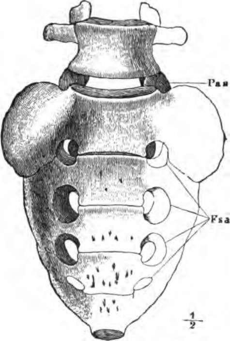

The Axial Skeleton
Description
This section is from the book "The Human Body: An Elementary Text-Book Of Anatomy, Physiology, And Hygiene", by H. Newell Martin. Also available from Amazon: The Human Body.
The Axial Skeleton
The fundamental portion of this is the backbone, spinal column, or spine, partly seen at e and c, Fig. 8, and represented isolated from the rest of the bones and viewed from the left side in Fig. 9. It forms an axis, on which the rest of the body is carried. On the upper end of the vertebral column is the skull, a, b, Fig. 8, and attached by ligaments to the under surface of the skull is the hyoid bone, to which the root of the tongue is fastened.
Attached to the sides of part of the spine are the dorsal ends of the ribs, slender bones which curve round the sides of the chest and are united in front to the sternum, or breastbone, d, Fig. 8.
Why is the skeleton made up of separate bones ? What are articulations ? What is a joint? What covers the end of a bone in a joint ?
What are the chief divisions of the bony skeleton ? What parts of the body does the axial skeleton support ? What is the appendicular skeleton?
What is the fundamental portion of the axial skeleton? What does it bear on its upper end? What is the hyoid bone ?
What are the ribs? Where are their ends fixed ?

Fig. 9. Side view of the spinal column.
Skull, hyoid bone, vertebral column, ribs, and sternum together form the axial skeleton.
The appendicular skeleton consists of the pectoral and pelvic girdles, attaching the limb bones to the axial skeleton; and of the bones of the limbs themselves.
The pectoral arch or girdle consists on each side of a clavicle or collar-bone, u, and a scapula or shoulder-blade, which latter is a flat, triangular bone, lying on the back of the chest outside the ribs. The clavicle is a slender curved bone like an italic f in form. Its outer end is attached to the scapula, and its inner end to the top of the sternum. It serves to brace out and support the shoulder-joint, and to prevent it from falling downwards and inwards toward the front of the chest. It is absent in beasts which use their fore limbs for walking only, as horses, dogs, and cattle, but is well developed in monkeys and bats.
Name the parts which make up the axial skeleton ?
Of what main divisions does the appendicular skeleton consist? What bones exist in the pectoral arch ? Where does each lie? What is its shape? Name some animals which have no collar bones, and some which have them.
The skeleton of the upper limb consists of: (1) The arm bone, or humerus, t, Fig. 8, which extends from the shoulder to the elbow, and meets the scapula at the shoulder-joint; (2) of two forearm bones, the radius, g, and ulna, f, the radius being on the thumb side ; and (3) of twenty-seven hand bones. Of the hand bones eight, the carpal bones, h, lie in the wrist; five, the metacarpal bones, i, in the palm of the hand ; and fourteen, the phalanges, k, in the thumb and fingers—two for the thumb, and three for each finger.
The pelvic arch or girdle consists of a single bone, the os innominatum, s, on each side ; this is firmly fixed at its dorsal end to the lower part of the back-bone, meets its fellow ventrally at the lower end of the abdomen, and bears a deep socket on its outer side, into which the upper end of the thigh-bone fits.
The skeleton of the lower limb consists of : (1) The thigh-bone or femur, r, the longest bone in the body, bearing above a hemispherical knob fitting into a hollow on the outside of the os innominatum, with which it forms the hip-joint; (2) of two bones, tibia and fibula, l and m, in the lower leg, the former on the great toe side ; (3) of the knee-cap or patella; q, in front of the knee-joint; (4) of twenty-six foot bones. Of the foot bones seven, the tarsal bones, n, lie below the ankle-joint; five, the metatarsal bones, o, succeed these in the front half of the sole of the foot; and fourteen phalanges, p, are found in the toes ; two in the great toe and three in each of the others.
How many bones are there in the upper limb? Which of these lies between the elbow and shoulder joints? With what bone does it articulate above? Name the forearm bones. Which of them lies to the outer side when the palm of the hand is turned forward? How many bones are there in the hand? Where are the carpal bones? How many of them are there? The metacarpal bones ; position and number? The phalanges of the hand ; position and number ?
How many bones form the pelvic arch ? What are they named? To what are their dorsar ends attached? Where do they meet one another ? What bone of the leg forms a joint with the innominate bone ?
What is the first bone in the skeleton of the lower limb ? How does it end above ? With what bones does it articulate ? At what joints ? What bones extend from the knee to the ankle joint ? Which of them is on the inner side of the leg ?
Fig. 10. The last lumbar vertebra and the sacrum seen from the ventral side. Fsa, anterior sacral foramina.
Where is the patella? How many bones are there in each foot? Into what groups are the foot bones classified? Where are the tarsal bones? How many ? The metatarsal ? How many ? The phalanges ? How many ?
Continue to: